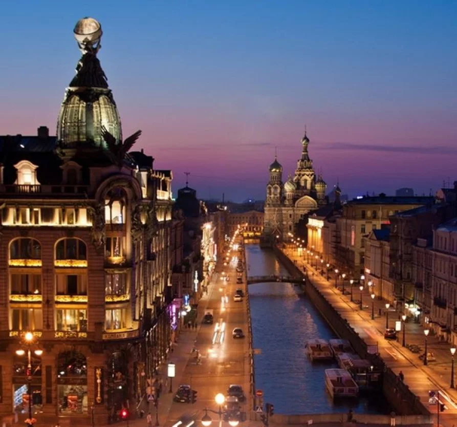
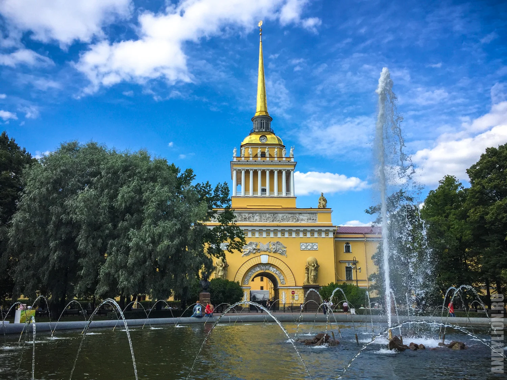
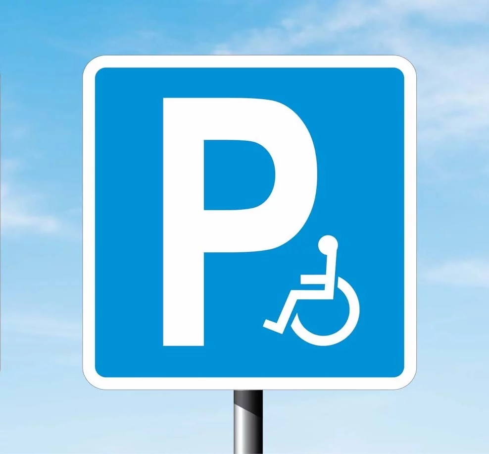

Сервис фиксации транспортных средств
с закрытыми ГРЗ в зоне ЕГПП
Центральный район
Санкт-Петербурга

Адмиралтейский район
Санкт-Петербурга

Администрирование мест
для инвалидов

Проверить ТС
ГИС ФРИ
Центральный район. Фиксация транспортных средств
с закрытыми ГРЗ в зоне ЕГПП
1. ФИО сотрудника ГЦУП
-
Маслов Алексей Васильевич
Балашов Алексей Игоревич
Жариков Игорь Анатольевич
Костыльков Игорь Валентинович
Мольво Дмитрий Сергеевич
Раскатов Станислав Владимирович
Чёмин Евгений Алексеевич
Чурсин Егор Николаевич
2. Государственный регистрационный номер ТС
3. Адрес места фиксации
-
1-я Советская ул.
2-я Советская ул.
3-я Советская ул.
4-я Советская ул.
5-я Советская ул.
6-я Советская ул.
7-я Советская ул.
8-я Советская ул.
9-я Советская ул.
10-я Советская ул.
Адмиралтейский пр.
Александра Невского ул.
Александра Невского пл.
Амбарная ул.
Апраксин пер.
Аптекарский пер.
Артиллерийская ул.
Артиллерийский пер.
Атаманская ул.
Бакунина пр.
Банковский пер.
Басков пер.
Белинского ул.
Белинского пл.
Бонч-Бруевича ул.
Большая Конюшенная ул.
Большая Морская ул.
Большая Московская ул.
Боровая ул.
Бородинская ул.
Владимирский пр.
Водопроводный пер.
Робеспьера наб.
Виленский пер.
Волоколамский пер.
Волынский пер.
Воронежская ул.
Восстания ул.
Восстания пл.
Гагаринская ул.
Гангутская ул.
Гончарная ул.
Гороховая ул.
Госпитальная ул.
Графский пер.
Греческий пр.
Грибоедова наб. канала.
Гродненский пер.
Дворцовая наб.
Дворцовая пл.
Дворцовый проезд
Дегтярная ул.
Дегтярный пер.
пер. Джамбула
Дмитровский пер.
Днепропетровская ул.
Достоевского ул.
Друскеникский пер.
Думская ул.
Евгеньевская ул.
Жуковского ул.
Загородный пр.
Замковая ул.
Захарьевская ул.
Заячий пер.
Звенигородская ул.
Зимней канавки наб.
Зодчего Росси ул.
Инженерная ул.
Искусств пл.
Исполкомская ул.
Итальянская ул.
Кавалергардская ул.
Казанская пл.
Казанская ул.
Калужский пер.
Караванная ул.
Кирилловская ул.
Кирочная ул.
Кирпичный пер.
Кленовая ул.
Ковенский пер.
Колокольная ул.
Коломенская ул.
Конная пл.
Конная ул.
Константина Заслонова ул.
Конюшенная пл.
Конюшенный пер.
Короленко ул.
Костромская ул.
Красного Текстильщика ул.
Красноборский пер.
Кременчугская ул.
Кричевский пер.
Круглый пер.
Крылова пер.
Кузнечный пер.
Кутузова наб.
Лаврский проезд
Лебяжьей канавки наб.
Лиговский пр.
Лиговский переулок
Литейный пр.
Ломоносова пл.
Ломоносова ул.
Малая Морская ул.
Малая Московская ул.
Манежный пер.
Манежная пл.
Марата ул.
Мариинский проезд
Маяковского ул.
Мелитопольский пер.
Миллионная ул.
Миргородская ул.
Митавский пер.
Михайловский проезд
Михайловская ул.
Моисеенко ул.
Мойки наб. р.
Москательный пер.
Мошков пер.
Моховая ул.
Мраморный пер.
Мучной пер.
Мытнинская ул.
Некрасова ул.
Невский пр.
Новгородская ул.
Обводного кан. наб.
Обуховской Обороны пр.
Озерной пер.
Одесская ул.
Орловская ул.
Орловский пер.
Оружейника Фёдорова ул.
Островского пл.
Остропольский пер.
Очаковская ул.
Павлоградский пер.
Парадная ул.
Перекупной пер.
Песковский пер.
Пестеля ул.
Печатника Григорьева ул.
Поварской пер.
Полтавский проезд
Полтавская ул.
Потемкинская ул.
Правды ул.
Преображенская пл.
Пролетарской Диктатуры ул.
проезд без названия от пр.Бакунина до Херсонского проезда (за перехватывающей парковой)
Проезд под путепроводом Литейного моста (от наб. Кутузова до наб. Робеспьера)
проезд вдоль Марсова поля (между Миллионной ул., наб.Лебяжьей канавки и наб. р. Мойки)
Профессора Ивашенцова ул.
Прудковский пер.
Пушкинская ул.
Радищева пер.
Радищева ул.
Разъезжая ул.
Растрелли пл.
Робеспьера наб.
Роменская ул.
Рубинштейна ул.
Рылеева ул.
Рязанский пер.
Садовая ул.
Саперный пер.
Свечной пер.
Сергея Тюленина пер.
Синопская наб.
Смольная наб.
Смольного ул.
Смольный пр.
Солдатский пер.
Соляной пер.
Социалистическая ул.
Ставропольская ул.
Старорусская ул.
Стремянная ул.
Суворовский пр.
Сухопутный пер.
Суворовская пл.
Съезд N 1 (с пр.Обуховской Обороны на наб.Обводного кан., д.3)
Съезд N 2 (с пр.Обуховской Обороны на наб.Обводного кан., д.3)
Таврическая ул.
Таврический пер.
Тверская ул.
Тележный пер.
Тележная ул.
Торговый пер.
Транспортный пер.
Тульская ул.
Ульяны Громовой пер.
Фонтанки наб. р.
Фонтанная ул.
Фуражный пер.
Фурштатская ул.
Харьковская ул.
Херсонская ул.
Херсонский проезд
Хохрякова ул.
Чайковского ул.
Чебоксарский пер.
Чернорецкий пер.
Чернышевского пр.
Черняховского ул.
Чехова ул.
Шведский пер.
Шпалерная ул.
Ярославская ул.
Тюшина ул.
Щербаков пер.
4. Номер дома
5. Фото №1 (закрытый ГРЗ)
6. Фото №2 (открытый ГРЗ)
Направить заявку